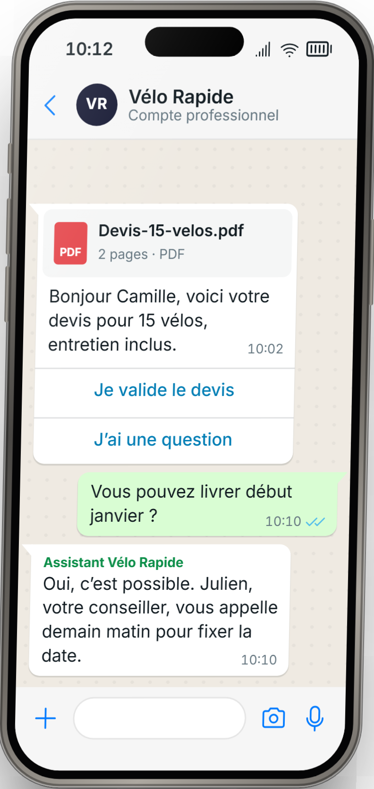
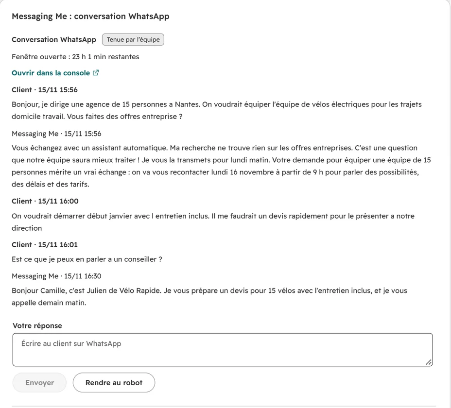

Pourquoi WhatsApp, quel rôle pour Meta, et ce que Messaging Me ajoute au canal natif. En six pages.
Pourquoi WhatsApp
Le CRM sait tout du client. Il lui manque le canal où le client répond.
Vos clients HubSpot ont des fiches propres, des transactions suivies, des workflows qui tournent. Leurs messages partent par e-mail, et attendent.
Sur WhatsApp, la même relance arrive là où leurs clients passent leur journée, et elle appelle une réponse : un bouton, une question, une photo, un document. Chaque réponse revient dans HubSpot, sur la fiche, prête pour le commercial ou pour le workflow suivant.
Et la conversation fait revenir le client : WhatsApp est un levier de fidélisation autant que de développement.
56 Md’utilisateurs de WhatsApp en France.1
83 %des Français sont ouverts aux messages des entreprises, quand ils sont pertinents.2
×4,5de clics pour Air France sur WhatsApp que par e-mail.3
+30 %de réachat chez les clients d’un assureur qui ont échangé plus de 3 messages avec lui.4
Dans ce livre blanc
01Le rôle de Meta
02Ce que nous ajoutons au canal natif
03HubSpot, seule interface de l’équipe
04Les campagnes lancées depuis HubSpot
05Pour vous, intégrateur
1. Meta, 2026. 2. Enquête Kantar pour Meta, citée dans l’étude BCG et Meta du 9 avril 2026. 3. Étude BCG et Meta, 9 avril 2026. 4. Mesure Messaging Me chez un client du secteur de l’assurance.
app.messagingme.fr
01 · Le rôle de MetaWhatsApp dans HubSpot
Le client écrit, ou l’entreprise écrit. Meta fixe les règles.
Une entreprise qui automatise WhatsApp passe par l’API officielle de Meta. Deux sens de conversation, et une règle simple qui les relie : une fenêtre de 24 heures s’ouvre chaque fois que le client écrit.
↘L’entrant
Le client écrit le premier.
Depuis la bulle WhatsApp du site, un QR code, un lien dans un e-mail ou une signature.
Depuis une publicité Facebook ou Instagram qui ouvre la conversation (Click-to-WhatsApp).
Pendant 24 heures, on lui répond librement : texte, documents, boutons.
↗Le push
L’entreprise écrit la première.
Par un modèle de message approuvé par Meta, avec ses variables tirées de la fiche HubSpot.
Un modèle de service (un devis, un rendez-vous, une commande) ou marketing (une offre), celui-ci seulement à qui a donné son accord.
Dès que le client répond, la fenêtre de 24 heures s’ouvre. Qui répond STOP ne reçoit plus rien.
Le rôle de Meta
Il opère l’APIWhatsApp Business Platform porte chaque message, entrant comme sortant.
Il vérifie l’entrepriseSon portefeuille Meta Business, son numéro, son nom d’affichage.
Il approuve les modèlesChaque message de push est relu avant son premier envoi.
Il veille à la qualitéUn modèle trop souvent bloqué ou signalé est mis en pause.
Messaging Me se branche sur cette API : le numéro du client (un nouveau, ou celui de son application WhatsApp Business, qu’il garde) se connecte par la fenêtre officielle de Meta, puis Messaging Me le relie à HubSpot.
Le bon moment
WhatsApp marche quand le message suit un événement du client. Et c’est HubSpot qui connaît ces événements.
Le CRM reste le centre : il décide qui reçoit quoi, et quand. WhatsApp porte le message, puis rapporte la réponse dans la fiche.
Un formulaire est rempliLe contact reçoit sa réponse sur WhatsApp, et la conversation qualifie sa demande.
Une transaction passe à « Devis envoyé »Le devis part en PDF, avec deux boutons : valider, ou poser une question.
Un rendez-vous approcheUn rappel la veille, confirmer ou décaler d’un geste.
Un contrat arrive à échéanceLe renouvellement se propose là où le client répond.

Messaging Me · Livre blanc pour les intégrateurs HubSpot02
02 · Ce que nous ajoutonsWhatsApp dans HubSpot
Le maillon manquant entre la conversation et HubSpot.
Le canal natif branche WhatsApp sur HubSpot. Messaging Me mène la conversation : un agent IA ou un scénario répond au client, pose les bonnes questions et range les réponses dans HubSpot. L’équipe n’intervient que quand c’est utile, avec l’action à mener déjà écrite sur la fiche : créer le devis, rappeler, reprendre la main.
Répondre
Un agent IA nourri du site et des documents du client répond à toute heure.
Récolter
Les réponses (le besoin, le budget, la date, un document) s’écrivent dans les propriétés HubSpot du contact.
Qualifier
Chaque conversation est analysée : intention, sentiment, urgence, action suggérée, sur la fiche.
Transmettre
Une tâche part au propriétaire du contact, ou la conversation arrive dans l’Inbox HubSpot.
Canal WhatsApp natif de HubSpot
Messaging Me
La conversation dans l’Inbox, la réponse depuis HubSpot
✓
✓Inbox : Sales ou Service Hub Pro
Des modèles envoyés depuis les workflows
✓
✓
Un agent IA sur WhatsApp
✓Breeze Customer Agent, offres Pro ou Enterprise
✓Quelle que soit l’offre HubSpot
Avec toutes les offres HubSpot, gratuite comprise
✕Marketing ou Service Hub, Pro ou Enterprise
✓
Chaque conversation analysée : intention, sentiment, action suggérée
✕
✓
Les propriétés HubSpot remplies depuis la conversation
✕
✓
Une tâche assignée, avec l’action à mener
✕
✓
Des scénarios reliés aux API et aux outils du client
✕
✓
Les leads des pubs Click-to-WhatsApp et des formulaires Meta
✕
✓
Canal natif : d’après la documentation de HubSpot, novembre 2026.
Messaging Me · Livre blanc pour les intégrateurs HubSpot03
03 · Une seule interfaceWhatsApp dans HubSpot
L’équipe de votre client ne quitte pas HubSpot.
Messaging Me s’installe comme une app HubSpot. Les commerciaux et le service client lisent, répondent et agissent depuis HubSpot. Rien de nouveau à apprendre pour eux.

La carte Messaging Me sur la fiche contact. La conversation, qui la tient, le temps restant dans la fenêtre de 24 heures, et la réponse du conseiller.
Répondre depuis la fiche
Toute personne du portail répond au client, chaque réponse signée de son auteur. Fenêtre fermée, la carte propose les modèles approuvés, déjà remplis depuis la fiche.
Les conversations dans l’Inbox
Une conversation qui attend un conseiller arrive dans l’Inbox HubSpot, affectée à qui l’a en main. Fermer le fil rend la main à l’agent IA.
Des tâches, même sans humain
Une conversation menée jusqu’au bout par l’agent laisse une tâche quand une action reste à faire : rappeler, envoyer le devis. Celui qui demande un humain en déclenche une dans la minute.
Des propriétés pour les workflows
L’analyse et les réponses s’écrivent en propriétés : listes et workflows HubSpot s’en servent comme de n’importe quelle autre.
Le STOP synchronisé
Un contact qui écrit STOP est marqué sur sa fiche HubSpot : les listes l’excluent, rien ne lui part.
La console Messaging Me ne sert qu’à construire : les scénarios, les modèles à faire approuver par Meta, l’agent IA et sa base de connaissance, et le choix de ce qui passe dans HubSpot, fonction par fonction. C’est votre terrain d’intégrateur, pas celui de l’équipe du client.
Ce qu’il faut côté HubSpot
Ni Sales Hub, ni Data Hub exigés.
Toutes les offres, gratuite comprise
L’essentiel
La carte sur la fiche, les réponses et les modèles, l’analyse, les propriétés, les tâches, le scénario lancé par une étape de transaction, les listes comme audience, le STOP.
Un Hub en Pro, quel qu’il soit
+ les workflows
Les actions Messaging Me dans les workflows : envoyer un modèle, lancer un scénario, depuis un contact ou une transaction. Marketing Hub Pro suffit.
Sales ou Service Hub en Pro
+ l’Inbox HubSpot
Les conversations WhatsApp dans l’Inbox HubSpot, à côté des e-mails et du chat.
Messaging Me · Livre blanc pour les intégrateurs HubSpot04
04 · Les campagnesWhatsApp dans HubSpot
HubSpot déclenche, WhatsApp converse.
Ce que votre client sait déjà faire dans HubSpot devient un envoi WhatsApp : un workflow, une étape de pipeline, une liste. Pas de développement, pas de webhook à héberger.
W
Un workflow
Deux actions s’ajoutent aux workflows de contacts : envoyer un modèle WhatsApp, lancer un scénario. Une troisième part d’un workflow de transactions.
Formulaire rempli, propriété changée
T
Une étape de transaction
Une transaction atteint l’étape choisie : son contact reçoit le scénario, sans écrire de workflow.
« Devis envoyé », « Gagné »
L
Une liste
Une liste HubSpot, active ou statique, devient l’audience d’une campagne WhatsApp. Les contacts sans accord marketing sont écartés.
Clients à renouveler en janvier
D
Une date
Une date de la fiche (un rendez-vous, une échéance) déclenche un message avant ou après elle.
La veille du rendez-vous
Dans HubSpot
Phase de la transaction : « Proposition présentée »Le déclencheur du workflow, ou de l’automation sur l’étape.
→
Action Messaging Me
Lancer un scénario (transaction)Le scénario choisi, avec les champs HubSpot qu’il lit : conseiller, lien du devis.
→
Sur WhatsApp
« Bonjour Camille, voici votre devis… »Le modèle part, la réponse revient sur la fiche HubSpot.
Le message se nourrit de HubSpot. Toute propriété du contact ou de la transaction remplit une variable : le prénom, le nom du conseiller, son lien de prise de rendez-vous, le lien du devis HubSpot ou son PDF joint au message. Une réponse du client s’écrit à son tour dans une propriété.
Vente
Le devis qui ne dort pas
La transaction passe à « Devis envoyé ».
Le devis part en PDF, avec « Je valide » et « J’ai une question ».
L’agent répond, ou passe la main au conseiller.
Sans réponse, une relance part trois jours plus tard.
Acquisition
Le lead d’une publicité
Une pub Click-to-WhatsApp ouvre la conversation.
L’agent qualifie : besoin, budget, délai.
Le contact est créé, ses propriétés remplies.
Qualifié, il arrive chez le commercial avec une tâche.
Service
Le rendez-vous tenu
Le client réserve par le lien du conseiller.
La veille, un rappel avec « Je confirme » et « Je dois décaler ».
Sa réponse s’écrit dans HubSpot, où un workflow la suit.
Messaging Me · Livre blanc pour les intégrateurs HubSpot05
05 · Pour vousWhatsApp dans HubSpot
Un projet à proposer à chacun de vos clients HubSpot.
WhatsApp prolonge ce que vous avez déjà construit chez eux : les propriétés, les pipelines, les workflows. Vous apportez le cadrage et la mise en place ; Messaging Me apporte la plateforme.
Ce que vous livrez
Choisir les momentsLes événements du CRM qui méritent un message.
Connecter le numéroPar la fenêtre officielle de Meta, en un rendez-vous.
Brancher HubSpotL’app s’installe en un clic, chaque fonction s’allume d’un interrupteur.
ConstruireLes scénarios, l’agent IA, les modèles à faire approuver.
AutomatiserLes workflows, les étapes, les listes qui déclenchent.
Rien à développer
Une app HubSpot, pas un chantier technique.
Pas de serveur ni de webhook à héberger.
Pas de Data Hub ni de Sales Hub imposés au client.
Une API, des webhooks et un serveur MCP pour aller plus loin quand un projet le demande.
La facturation
Deux façons de facturer, selon le projet.
À la consommationLe client paie l’usage de l’API, au fil des conversations.
Par abonnementUn abonnement mensuel donne accès à la plateforme.
Parlons de vos clients HubSpot.
Une démonstration sur un portail HubSpot, un premier client à cadrer ensemble, ou simplement une question : écrivez-moi, ou appelez-moi.
Julien Dumas
Fondateur, Messaging Me
E-mailjulien@messagingme.fr
Mobile+33 6 33 92 15 77
Webapp.messagingme.fr
Messaging Me · Livre blanc pour les intégrateurs HubSpot06